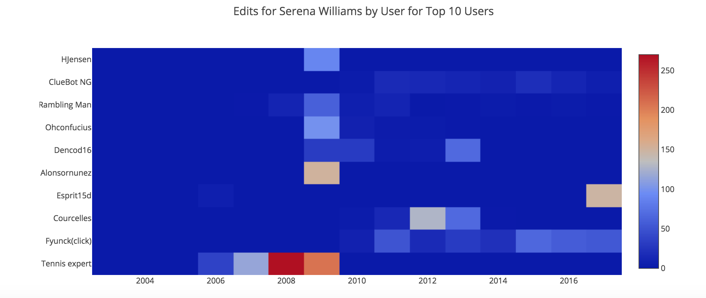
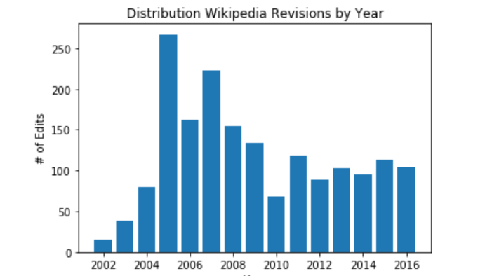

11/3/17: Final Project Page
Group Page10/25/17: Article Response
Estimated Time to Complete: 35 minutes
Certain issues that were common in “Science isn’t broken” article are also relevant to our current Wikipedia project. Not only did it address that data can be manipulated to achieve a certain hypothesis but it accounted for the human bias that occurs while working on research. Publishers are conditioned to produce extreme results from their data sets and make groundbreaking change in their area of study which is often not the most valid result. While collecting and cleaning the data I also can feel the looming pressure to have to produce results that justify our hypothesis. If the data does not agree with our proposal it would seem like a waste of energy. Although the result of this Wikipedia project is not vital to my studies, for some scientists and professors publishing material is a necessity and helps open doors for their careers. Thus, the high volume of incorrect and skewed research is understandable while considering the heavy implications that being published entails. The best way to combat incorrect analysis is to peer-review, reflect, and analyze the data in ways that don’t just prove your hypothesis.
10/25/17: Analyzed Wikipedia Page
Estimated Time to Complete First Exploration Notebook : 1 hour
 Heat Map10/25/17: Summarized Research
Estimated Time to Complete: 45 minutes
One relevant research paper that I have been reading is called “Detecting Wikipedia Vandalism with Active Learning and Statistical Language Models” by Chin, Street, Srinivasan, and Eichmann. The focus was on Vandalism in Wikipedia and how certain malicious editors compromise the integrity of information for the entire community. Their goal throughout research was to find new methods to automate the ways Wikipedia and detect and correct Vandalism throughout their pages. Vandalism by their definitions included mass deletions of information or blank spaces, editing, changing or formatting articles incorrectly with malintent. There are already structures and bots in place to help prevent obvious cases of vandalism like phrases with all capital letters or swear words but there are some instances of Vandalism that pose more of a challenge to editors. Certain sentences that may make grammatical sense but are otherwise unintelligible are the hardest edits to detect. An example of such vandalism could be “I love bananas” in an article about the civil war. The strategy to implement more automated corrections would involve multiple algorithms and statistical language models. This would ensure that words typically found in the article and related to the subject would not be flagged for vandalism but that the words that have a lower probability of occurring would be detected. Using these new strategies Wikipedia may be able to thwart the growing demand of editors cleaning up after vandals.
10/25/17: Initial Python Notebooks
Estimated Time to Complete Notebook on Time, Datetime, Dateutil: 1 hour
Estimated Time to Complete Wikipedia Revisions Notebook: 1 hour
 Histogram